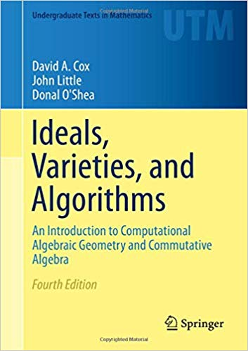

Course description:
This course will cover the basics of computational algebraic geometry,
including the core algorithms in the subject, as well as introduce
some of the most common algebraic varieties which occur in applications.
We will gain familiarity with software for algebraic geometry, including
the systems
Macaulay 2,
Singular,
Bertini, and
PHCpack.
Students will complete a final project in the subject in lieu of a final exam.
Grading will be based on final projects, participation in the online course discussion
and regular (but light) homework that includes computer work.
|
Expected topics to cover:
- Algebraic-geometric dictionary
- Resultants and elimination
- Gröbner bases, including algorithms based on Groebner bases
- Solving polynomial systems symbolically
- Solving systems of polynomial equations using numerical continuation
- Certification of numerical solutions. Smale's α-theory
- Numerical algebraic geometry. Witness sets and numerical irreducible decomposition
- Real root counting. Sturm's theorem. Fewnomial theory
|
Textook:
There are two sources.
One is the award-winning
Ideals, Varieties, and Algorithms by David Cox, John Little, and Donal O'Shea.
(The edition does not matter.)
In particular it contains all the algebraic preliminaries, and is a great resource.
It is required of the distance students, and I may give reading assignments and
some homeworks from it for you.
It is available in a free download from the TAMU library.
A second text consists of chapters from a book I am writing on
Algebraic geometry for applications with Thorsten Theobald:
Notes on The Algebraic-Geometric Dictionary
Revised version of 14 January 2019
Notes on symbolic computation.
Notes on Properties of Varieties.
Notes on Numerical Algebraic Geometry.
The last two are (Dec 2018) a bit incomplete. I plan to complete them for this course.
|
| |

|